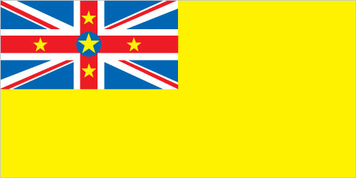

Australia-Oceania :: NIUE
Introduction :: NIUE
-
Niue's remoteness, as well as cultural and linguistic differences between its Polynesian inhabitants and those of the adjacent Cook Islands, has caused it to be separately administered by New Zealand. The population of the island continues to drop (from a peak of 5,200 in 1966 to 1,626 in 2015) with substantial emigration to New Zealand 2,400 km to the southwest.
Geography :: NIUE
-
Oceania, island in the South Pacific Ocean, east of Tonga19 02 S, 169 52 WOceaniatotal: 260 sq kmland: 260 sq kmwater: 0 sq kmcountry comparison to the world: 2131.5 times the size of Washington, DC0 km64 kmterritorial sea: 12 nmexclusive economic zone: 200 nmtropical; modified by southeast trade windssteep limestone cliffs along coast, central plateaumean elevation: NAelevation extremes: lowest point: Pacific Ocean 0 mhighest point: unnamed elevation 1.4 km east of Hikutavake 80 mfish, arable landagricultural land: 19.1%arable land 3.8%; permanent crops 11.5%; permanent pasture 3.8%forest: 71.2%other: 9.7% (2011 est.)0 sq km (2012)population distributed around the peripheral coastal areas of the islandtropical cyclonesincreasing attention to conservationist practices to counter loss of soil fertility from traditional slash and burn agricultureparty to: Biodiversity, Climate Change, Climate Change-Kyoto Protocol, Desertification, Law of the Sea, Ozone Layer Protectionone of world's largest coral islands; the only major break in the surrounding coral reef occurs in the central western part of the coast
People and Society :: NIUE
-
1,618 (July 2017 est.)country comparison to the world: 233noun: Niuean(s)adjective: NiueanNiuen 66.5%, part-Niuen 13.4%, non-Niuen 20.1% (includes 12% European and Asian and 8% Pacific Islanders) (2011 est.)Niuean (official) 46% (a Polynesian language closely related to Tongan and Samoan), Niuean and English 32%, English (official) 11%, Niuean and others 5%, other 6% (2011 est.)Ekalesia Niue (Congregational Christian Church of Niue - a Protestant church founded by missionaries from the London Missionary Society) 67%, other Protestant 3% (includes Seventh Day Adventist 1%, Presbyterian 1%, and Methodist 1%), Mormon 10%, Roman Catholic 10%, Jehovah's Witnesses 2%, other 6%, none 2% (2011 est.)-0.03% (2014 est.)country comparison to the world: 202population distributed around the peripheral coastal areas of the islandurban population: 44% of total population (2017)rate of urbanization: -0.49% annual rate of change (2015-20 est.)ALOFI (capital) 1,000 (2014)NAtotal: NAmale: NAfemale: NAtotal population: NAmale: NAfemale: NA (2017 est.)NA7.4% of GDP (2014)country comparison to the world: 681.84 physicians/1,000 population (2008)improved:urban: 98.4% of populationrural: 98.6% of populationtotal: 98.5% of populationunimproved:urban: 1.6% of populationrural: 1.4% of populationtotal: 1.5% of population (2015 est.)improved:urban: 100% of populationrural: 100% of populationtotal: 100% of populationunimproved:urban: 0% of populationrural: 0% of populationtotal: 0% of population (2015 est.)NANANA50% (2016)country comparison to the world: 6NA
Government :: NIUE
-
conventional long form: noneconventional short form: Niuenote: pronunciation falls between nyu-way and new-way, but not like new-weeformer: Savage Islandetymology: the origin of the name is obscure; in Niuean, the word supposedly translates as "behold the coconut"self-governing in free association with New Zealand since 1974; Niue fully responsible for internal affairs; New Zealand retains responsibility for external affairs and defense; however, these responsibilities confer no rights of control and are only exercised at the request of the Government of Niueself-governing parliamentary democracy (Fouo Ekepule) in free association with New Zealandname: Alofigeographic coordinates: 19 01 S, 169 55 Wtime difference: UTC-11 (6 hours behind Washington, DC, during Standard Time)none; note - there are no first-order administrative divisions as defined by the US Government, but there are 14 villages at the second order19 October 1974 (Niue became a self-governing state in free association with New Zealand)Waitangi Day (Treaty of Waitangi established British sovereignty over New Zealand), 6 February (1840)several previous (New Zealand colonial statutes); latest 19 October 1974 (Niue Constitution Act 1974); amended 1992, 2007 (2016)English common law18 years of age; universalchief of state: Queen ELIZABETH II (since 6 February 1952); represented by Governor General of New Zealand Governor General Dame Patricia Lee REDDY (since 28 September 2016); the UK and New Zealand are represented by New Zealand High Commissioner Ross ARDEN (since February 2014)head of government: Premier Toke TALAGI (since 18 June 2008)cabinet: Cabinet chosen by the premierelections/appointments: the monarchy is hereditary; premier indirectly elected by the Legislative Assembly for a 3-year term; election last held on 12 May 2017 (next to be held in 2020)election results: Toke TALAGI reelected premier; Legislative Assembly vote - Toke TALAGI (independent) 15, O'Love JACOBSEN (independent) 5description: unicameral Assembly or Fono Ekepule (20 seats; 14 members directly elected in single-seat constituencies by simple majority vote and 6 directly elected from the National Register or "common roll" by majority vote; members serve 3-year terms)elections: last held on 6 May 2017 (next to be held in 2020)election results: percent of vote by party - NA; seats by party - independent 20highest resident court(s): Court of Appeal (consists of the chief justice and up to 3 judges); note - the Judicial Committee of the Privy Council (in London) is the final appeal court beyond the Niue Court of Appealjudge selection and term of office: Niue chief justice appointed by the governor-general on the advice of the Cabinet and tendered by the premier; other judges appointed by the governor-general on the advice of the Cabinet and tendered by the chief justice and the minister of justice; judges serve until age 68subordinate courts: High Courtnote: Niue is a participant in the Pacific Judicial Development Program, which is designed to build governance and the rule of law in 15 Pacific island countriesAlliance of Independents or AINiue People's Action Party or NPP [Young VIVIAN]NAACP, AOSIS, FAO, IFAD, OPCW, PIF, Sparteca, SPC, UNESCO, UPU, WHO, WIPO, WMOnone (self-governing territory in free association with New Zealand)none (self-governing territory in free association with New Zealand)yellow with the flag of the UK in the upper hoist-side quadrant; the flag of the UK bears five yellow five-pointed stars - a large star on a blue disk in the center and a smaller star on each arm of the bold red cross; the larger star stands for Niue, the smaller stars recall the Southern Cross constellation on the New Zealand flag and symbolize links with that country; yellow represents the bright sunshine of Niue and the warmth and friendship between Niue and New Zealandyellow, five-pointed star; national color: yellowname: "Ko e Iki he Lagi" (The Lord in Heaven)lyrics/music: unknown/unknown, prepared by Sioeli FUSIKATAnote: adopted 1974
Economy :: NIUE
-
The economy suffers from the typical Pacific island problems of geographic isolation, few resources, and a small population. The agricultural sector consists mainly of subsistence gardening, although some cash crops are grown for export. Industry consists primarily of small factories for processing passion fruit, lime oil, honey, and coconut cream. The sale of postage stamps to foreign collectors is an important source of revenue.Government expenditures regularly exceed revenues, and the shortfall is made up by critically needed grants from New Zealand that are used to pay wages to public employees. Economic aid allocation from New Zealand in FY13/14 was US$10.1 million. Niue has cut government expenditures by reducing the public service by almost half.The island in recent years has suffered a serious loss of population because of emigration to New Zealand. Efforts to increase GDP include the promotion of tourism and financial services, although the International Banking Repeal Act of 2002 resulted in the termination of all offshore banking licenses.$10.01 million (2003 est.)country comparison to the world: 228$10.01 million (2003)6.2% (2003 est.)country comparison to the world: 22$5,800 (2003 est.)country comparison to the world: 164agriculture: 23.5%industry: 26.9%services: 49.5% (2003)coconuts, passion fruit, honey, limes, taro, yams, cassava (manioc, tapioca), sweet potatoes; pigs, poultry, beef cattlehandicrafts, food processingNA%663 (2001)country comparison to the world: 231note: most work on family plantations; paid work exists only in government service, small industry, and the Niue Development Board12% (2001)country comparison to the world: 151NA%lowest 10%: NA%highest 10%: NA%revenues: $15.07 millionexpenditures: $16.33 million (FY04/05)-12.6% of GDP (FY04/05)country comparison to the world: 2051 April - 31 March4% (2005)country comparison to the world: 163$201,400 (2004 est.)country comparison to the world: 222canned coconut cream, copra, honey, vanilla, passion fruit products, pawpaws, root crops, limes, footballs, stamps, handicrafts$9.038 million (2004 est.)country comparison to the world: 222food, live animals, manufactured goods, machinery, fuels, lubricants, chemicals, drugs$418,000 (2002 est.)country comparison to the world: 203New Zealand dollars (NZD) per US dollar -1.4341 (2016)1.4279 (2015)1.4279 (2014 est.)1.2039 (2013 est.)1.23 (2012 est.)
Energy :: NIUE
-
3 million kWh (2015 est.)country comparison to the world: 2172.79 million kWh (2015 est.)country comparison to the world: 2150 kWh (2016 est.)country comparison to the world: 1750 kWh (2016 est.)country comparison to the world: 1791,000 kW (2015 est.)country comparison to the world: 215100% of total installed capacity (2015 est.)country comparison to the world: 140% of total installed capacity (2015 est.)country comparison to the world: 1510% of total installed capacity (2015 est.)country comparison to the world: 1910% of total installed capacity (2015 est.)country comparison to the world: 1990 bbl/day (2016 est.)country comparison to the world: 1760 bbl/day (2014 est.)country comparison to the world: 1690 bbl/day (2014 est.)country comparison to the world: 1690 bbl (1 January 2017 es)country comparison to the world: 1740 bbl/day (2014 est.)country comparison to the world: 18160 bbl/day (2015 est.)country comparison to the world: 2150 bbl/day (2014 est.)country comparison to the world: 18464.25 bbl/day (2014 est.)country comparison to the world: 2120 cu m (2013 est.)country comparison to the world: 1750 cu m (2013 est.)country comparison to the world: 2140 cu m (2015 est.)country comparison to the world: 1560 cu m (2013 est.)country comparison to the world: 1620 cu m (1 January 2014 es)country comparison to the world: 1773,520 Mt (2012 est.)country comparison to the world: 213
Communications :: NIUE
-
domestic: single-line (fixed line) telephone system connects all villages (and virtually all households) on islandinternational: country code - 683 (2015)1 government-owned TV station with many of the programs supplied by Television New Zealand; 1 government-owned radio station broadcasting in AM and FM (2009).nutotal: 1,090percent of population: 91.6% (July 2016 est.)country comparison to the world: 213
Transportation :: NIUE
-
1 (2013)country comparison to the world: 228total: 11,524 to 2,437 m: 1 (2017)total: 11,524 to 2,437 m: 1 (2013)total: 234 kmpaved: 210 km (2017)country comparison to the world: 214major seaport(s): Alofi
Military and Security :: NIUE
-
no regular indigenous military forces; Police Forcedefense is the responsibility of New Zealand
Transnational Issues :: NIUE
-
none